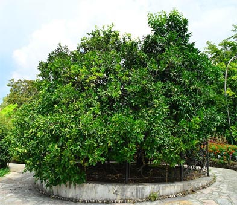

Дерево дружбы
Уникальное
и единственное в мире «Дерево дружбы» находится в городе Сочи.
Сад-музей расположен в центре города по ул. Фабрициуса, 2/28.
Нечасто
можно встретить видевших это удивительное дерево, т.к.
сад-музей огорожен забором и свободный доступ в любое время к
нему закрыт.
Дерево дружбы растет на территории цитрусового сада
Всероссийского научно-исследовательского института
цветоводства и субтропических культур.
История
дерева начинается с 1934 года, в котором, селекционер Фёдор
Михайлович Зорин высадил деревце дикого лимона и начал работу
по выведению новых сортов цитрусовых. В крону дерева ученый
привил до 45 разных сортов цитрусовых.
В
1940 году прививку на дереве сделал советский полярный
исследователь Отто Юльевич Шмидт. В настоящее время на дереве
растут ветки, привитые представителями 167 стран мира.
Известными посетителями привившими «Дерево Дружбы» стали
космонавты Ю. Гагарин, Г. Титов, В. Комаров, президент
республики Вьетнам Хо Ши Мин, певец Поль Робсон, глава кубы
Рауль Кастро. Урожай с дерева Дружбы собирают гости той
страны, представители которой сделали прививку дереву, так же
плоды отсылаются в посылке тем, кто привил почку.
В
1981 году в Саду Дружбы был открыт музей, в котором находятся
подарки с разных концов света, привезённые в дар «Дереву
Дружбы».
В сентябре 1987 года Организация Объединенных Наций присвоила городу Сочи звание "Посланец мира". Сочи стал седьмым российским и пятьдесят восьмым городом в мире, носящим это звание. Сам сад заслуживает внимания тем, что в нем представлена большая коллекция субтропических плодовых культур и реликтовых растений. В сад музее вы увидите хурму, гранат, инжир, фейхоа, маслины, саговник, араукарию, гинкго и много другого интересного.